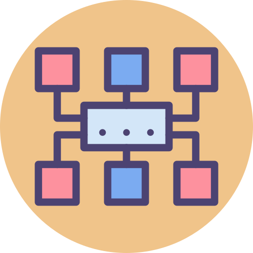
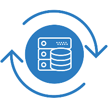
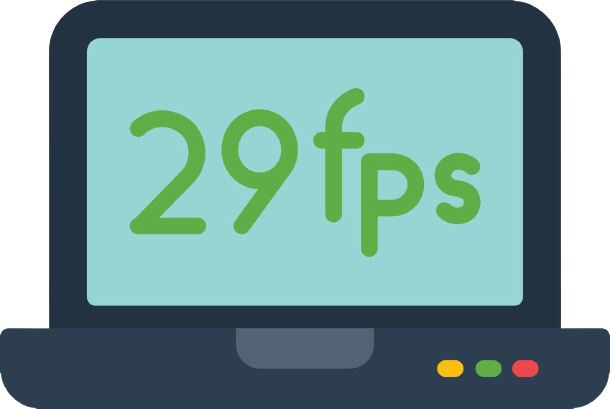
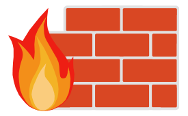

GLOSARIO TECNOLÓGICO
A |
B |
C |
D |
E |
F |
G |
H |
I |
J |
K |
L |
M |
N |
O |
P |
Q |
R |
S |
T |
U |
V |
W |
X |
Y |
Z |
A
Algoritmo: ordenado de operaciones sistemáticas que
permite hacer un cálculo y hallar la solución de un tipo de
problemas.

B
Backup: Copias de archivos, equipos de reemplazo o procedimientos alternativos disponibles para
ser usados en caso de emergencias producidas por fallas totales o parciales de un sistema computacional.

C
Compilar: Generar un programa en lenguaje de máquina
a partir de un lenguaje de programación de alto nivel.
D
Depuración: Detección, localización y eliminación de errores en un programa.
Dato: Representación de un hecho o idea que puede ser manipulado y al cual se le puede asignar
un significado.
E
Enlace: Texto o imagen que se encuentra en una página web y en la que el usuario puede pulsar o clicar para ser
dirigido a otro contenido diferente.
F
Frame: Se denomina frame en inglés a un fotograma o cuadro, una imagen particular dentro de una
sucesión de imágenes que componen una animación. La continua sucesión de estos fotogramas producen a la vista la sensación de movimiento, fenómeno
dado por las pequeñas diferencias que hay entre cada uno de ellos.

Firewall: Ver Cortafuegos.

G
Gif: Formato Grafico de Intercambio.
GPS: es un sistema que permite localizar cualquier objeto sobre la Tierra con una precisión de hasta centímetros, aunque lo común son unos
pocos metros.
H
Hacker: Experto en informática capaz de de entrar en sistemas cuyo acceso es restringido. No
necesariamente con malas intenciones.
HTML: Lenguaje de marcado de hipertexto. Es el lenguaje de marcado predominante para la elaboración
de páginas web.

I
Interfaz: Conexión entre dos componentes de hardware, entre dos aplicaciones o entre un usuario y
una aplicación. También llamada por el término en inglés interfase.
Internet: Red mundial de computadoras, cuya comunicación se realiza a través del protocolo TCP/IP.
J
JAVASCRIPT: Programa escrito en el lenguaje script de Java que es interpretado por la aplicación cliente,
normalmente un navegador (Browser).

jpg: Grupo Conjunto de Expertos en Fotografía. además de ser un método de compresión de
imágenes digitales, es también considerado como un formato de archivo. JPEG/Exif es el
formato de imagen más común utilizado por las cámaras fotográficas digitales y otros dispositivos
de captura de imagen. Los archivos de este tipo se suelen nombrar con la extensión .jpg.

K
Kilobyte: Medida de información. Contiene 1.024 bytes.
L
LAN: Red de área local. Es la forma en la cual se interconectan computadoras ubicadas en un mismo
lugar a través de un cable de red.See also: Red de área local (LAN).
Link: Se llama así a las partes de una página WEB que nos llevan a otra parte de la misma o nos
enlaza con otro servidor.

M
Malware: Es un tipo de software que tiene como objetivo infiltrarse o dañar una computadora sin el
consentimiento de su propietario. El término malware es muy utilizado por profesionales de
la informática para referirse a una variedad de software hostil, intrusivo o molesto.
Megabyte: Medida de información equivalente a 1.024 kilobytes.